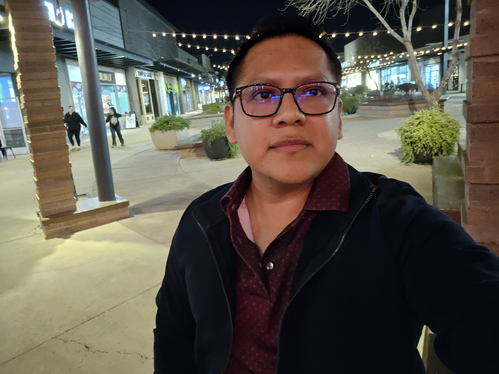

Cristhian Rafael Villa Miranda | WDD 130
Hello! My name is Cristhian Villa and I am from Guayaquil, Ecuador.
I am very happy to be in the United
States and to study a new degree in a new language.
My wish is to work and be a valuable asset to a
foreign company.
I want to help others achieve their goals through
effort, dedication, and sacrifice. Life is beautiful, but one must have the courage to always strive.